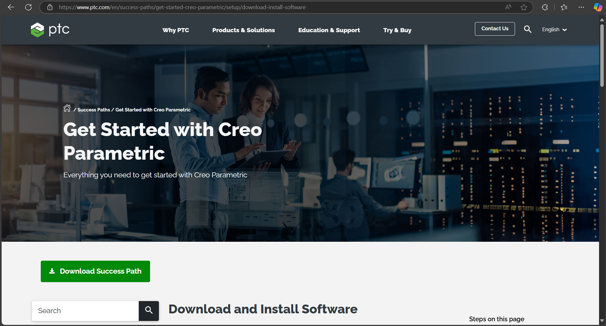

Step 1: Launch SolidWorks and Set Up Workspace
Open SolidWorks and create a new project. Set the working directory to keep files organized.

Open SolidWorks and create a new project. Set the working directory to keep files organized.
Go to File > New > Part. Select the desired template, name your part, and start a sketch on a reference plane.

Use the Extruded Boss/Base and Revolved Boss/Base tools to transform 2D sketches into 3D models.

Add features like Fillet, Chamfer, Shell, and Hole Wizard to refine and enhance your model.

Open Creo software and create a new project. Set the working directory to organize files efficiently.
Go to File > New > Part. Choose the desired template, name your part, and start sketching basic shapes.
Use the Extrude and Revolve tools to convert sketches into 3D models.
Add features like Chamfer, Fillet, Shell, and Hole to enhance the model.
This toolbar provides various tabs and tools for modeling, sketching, and editing:
Displays the structure of the current part and its features:
This is the workspace where you view and interact with your model:
Provides tools for common sketching and editing actions: